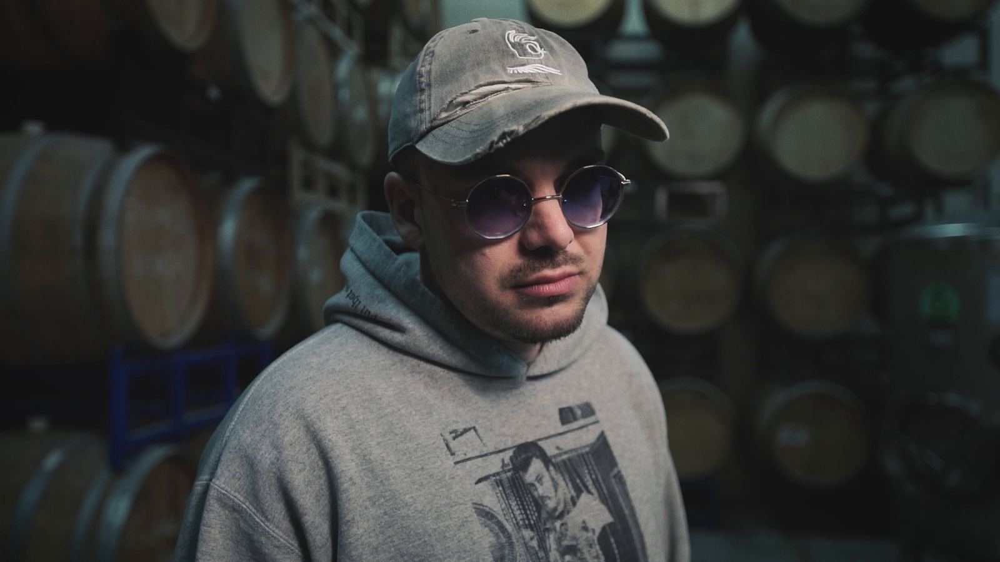
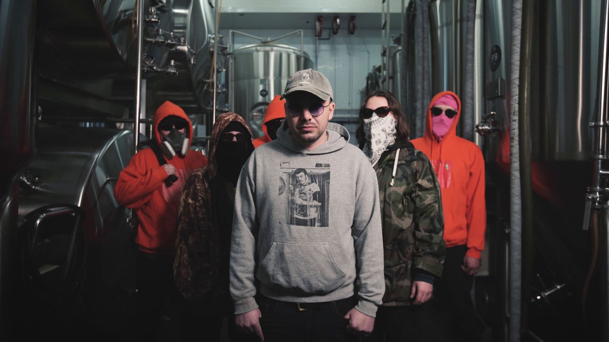
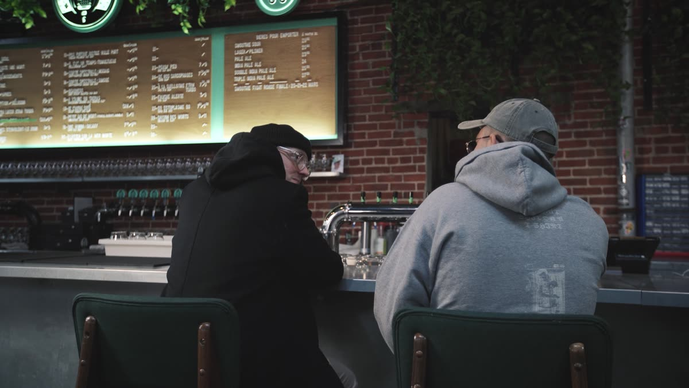
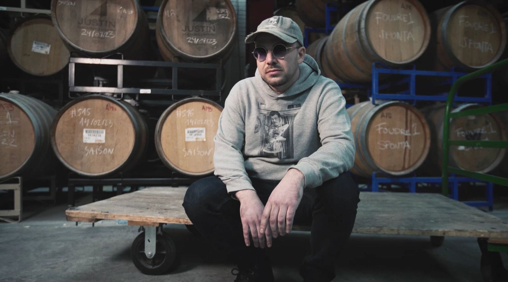
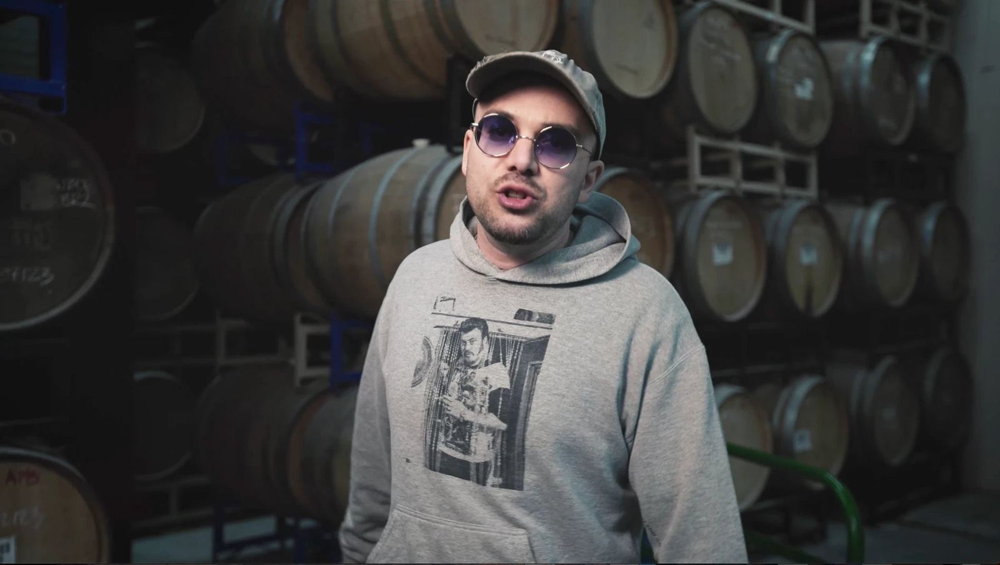

Pommier d’Alaska
Photo : Mocy · Mars 2026 · Brasserie Messorem, Montréal
Instru : ARAM, beatmaker
Enregistrement et mix : Kalil d’Orléans
Anciens sons
Clips
- Métis 2.02020
Paroles : Kalil Mnasri
Musique : Max Ruest
Vidéo : Jean-Gabriel Morin
Motion design : KJT - Le chat et la souris · Magic Color Band2014
Magic Color Band feat. Kalil Mnasri
Musique : Patrice Martineau
Vidéo : Cris Clay - Québec d’aujourd’hui · Jul-High2011
Interprétation : Kalil Mnasri et Jul-High
Live à La Ninkasi
Vidéo publiée par Jul-High - Tous pour 1 mic2008
Sach feat. Tp1 (Kalil Mnasri, Ugo, Fléau Le Ouf et Proulx)
Extrait du mixtape de Psycadelick (2006)
Enregistrement et mix : Dave Psycadelick Huot
Studio : Essentiel Productions
Beat : Street Scientist Beat (Sach)
Chansons
Reviens-moi · La Carotte PolaireLa Carotte Polaire avec Kalil Mnasri2017
Interprétation : La Carotte Polaire avec Kalil Mnasri
Ouvrir sur YouTubeProphète du malheur2015
Composition et interprétation : Kalil Mnasri
Ouvrir sur YouTube
Studio : Essentiel ProductionsMétis2014
Interprétation : Kalil Mnasri
Ouvrir sur YouTube
Instrumental : Patrice Martineau
Enregistrement : Patrice MartineauHistoires · Feuilles et RacinesFeat. Feuilles et Racines · EvolutionEvolution
Avec Feuilles et Racines
Ouvrir sur YouTube
Album : Évolution · 2011
Enregistrement et mix : Dave Psycadelick Huot
Studio : Essentiel Prod.R(évolution)EvolutionEvolution
Album : Évolution · 2011
Ouvrir sur YouTube
Beat : Sacha Boulet
Enregistrement et mix : Dave Psycadelick Huot
Studio : Essentiel Prod.On rêve · Jul-HighAvec Jul-High2011
Interprétation : Jul-High avec Kalil Mnasri
Ouvrir sur YouTube
Studio : Essentiel ProductionsL’avenue des dérangésEssentiel ProductionsEssentiel
Instrumental : Street Scientist Beat
Ouvrir sur YouTube
Enregistrement et mix : Dave Psycadelick Huot
Studio : Essentiel ProductionsL’apéritifEssentiel ProductionsEssentiel
Album : Évolution · 2011
Ouvrir sur YouTube
Beat : Dave Psycadelick Huot
Enregistrement et mix : Dave Psycadelick Huot
Studio : Essentiel ProductionsRegarde le mondeAvec Psycadélick et Sach2008
Interprétation : Kalil Mnasri, Psycadélick et Sach
Ouvrir sur YouTube
Studio : Essentiel Productions
Bio
Kalil Mnasri est né d’une mère québécoise et d’un père tunisien. Il grandit à Québec et commence à rapper en 2004, à 14 ans. Pendant son adolescence, il vit entre le Québec et la Tunisie et fait son secondaire 3 à Tunis.
En parallèle, avec ses amis, il forme le collectif Tp1 (Tous pour un), avec Proulx, Fléau Le Ouf et Ugo. Le groupe enregistre chez Essentiel Productions, un des premiers studios rap de la basse-ville de Québec, où passent entre autres Souldia, 187, Psycadélick, St-Saoul, etc.
Tp1 multiplie les shows à Québec et sort le clip « Tous pour 1 mic ». Malheureusement, le groupe se sépare sans avoir sorti d’album.


En solo, il sort la mixtape Evolution chez Essentiel Productions, avec Psycadélick (aussi à la réalisation), Neto Yuth, CRi (Feuilles et Racines), Sach, Tp1 et Jul-High, décédé en 2020 (paix à son âme).
Kalil d’Orléans, alors sous le nom de Kalil Mnasri, joue, notamment, à La Ninkasi, au Dagobert, à l’Impérial et au Festivent de Lévis, en première partie de Souldia. Il fait du slam. Il a aussi fait la finale des Slams du Québec au Lion d’Or en 2014.

Sortie : 13 décembre 2011
Graphisme : Dave Psycadelick Huot
Enregistré et mixé par Dave Psycadelick Huot au studio Essentiel Prod.
Beats 3, 7, 11 et 13 : Sacha Boulet
Beats 5, 10, 15 et 16 : Dave Psycadelick Huot
Beats 4 et 12 : Jean-Sébastien St-Saoul Girard
En 2016, il quitte Québec pour se lancer dans l’agriculture. Il réapparaît en 2026, établi dans la région de Rimouski, sous le nom de Kalil d’Orléans.
Shows à venir
Aucun show annoncé pour le moment.
Shows passés (ceux que je me rappelle)
2017
- NovembreSoirée L’Articule, Le Gavroche, Victoriaville
2015
- 28-29 aoûtColisée Desjardins, Victoriaville · Festirap
2014
- 19 sept.Brise-Bise, Gaspé · Festival afro de Gaspé
- 14 sept.Lion d’Or, Montréal · Finale des Slams du Québec
- 18 aoûtL’AgitéE, Québec · Spectacle de slam
- 19 maiL’AgitéE, Québec · Finale des slams de la ville de Québec
- 30 avrilLe Cercle, Québec · Lancement de l’album de Magic Color Band
- 22 févr.L’AgitéE, Québec · Soirée-bénéfice pour le projet L’AMIE
- 18 janv.Amphithéâtre Hydro-Québec, Université Laval · Hommage à Nelson Mandela
2013
2012
- 15 oct.L’AgitéE, Québec · Concours de slam
- 30 aoûtL’AgitéE, Québec · Soirée-bénéfice pour le Sénégal
- 25 juil.Dagobert, Québec · Les mercredis Rico Rich
- 17 marsL’Impérial, Québec · Finale de Boom 2012
- 8 févr.Dagobert, Québec · Concours Boom 2012
2011
- 17 nov.Musée de la civilisation, Québec · Nuit de la liberté
- 14 sept.Centre Louis-Jolliet, Québec · Spectacle de la rentrée
- 26 aoûtLa Ninkasi, Québec · Soirée-bénéfice pour le Sénégal
- 24 juil.Tournoi de soccer Kick-off · Hommage au Maghreb
- 18 juinParc Bardy, Québec · Fête de quartier
- 24 marsLa Ninkasi, Québec · Soirée-bénéfice pour Haïti
2010
- 14 avrilCégep Limoilou · Soirée-bénéfice pour Haïti
2009
- 14 aoûtDagobert, Québec · Concours Boom, Envol et Macadam
- 26 juil.Le Cercle, Québec
2008
- 8 marsSous-sol de l’église Saint-Jean-Baptiste, Québec · Première partie de Taktika
- 25 janv.L’AgitéE, Québec
Photos




Photos : Mocy · Mars 2026 · Brasserie Messorem, Montréal